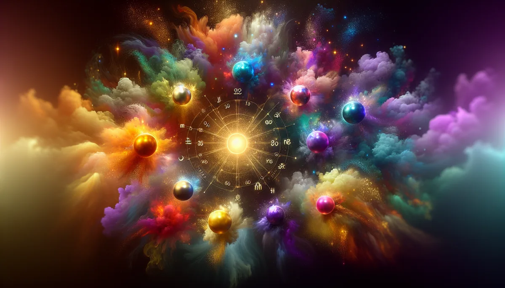

Birthday Color Energy · Chromatic Frequency Analysis
每個人出生時都帶著獨特的色彩光譜。
透過您的生日數字，解讀您的內在色彩、性格光譜和脈輪能量分布。
找到您的顏色，就找到了您的座標。
📜 源頭脈絡
人類很早就知道顏色會影響心情。但要說清楚「為什麼」，花了幾千年。
色彩與身心的古老直覺
古印度的脈輪系統，可能是人類最早把色彩和身體狀態做系統性對應的嘗試。七個脈輪，七種顏色：海底輪紅色（生存本能），臍輪橙色（情感慾望），太陽神經叢黃色（意志力量），心輪綠色（愛與連結），喉輪藍色（表達溝通），眉心輪靛色（直覺洞察），頂輪紫色（超越意識）。這套對應流傳了幾千年，至今仍是大部分「色彩與人格」系統的底層參照。
西方的色彩理論則從光學開始。1666年，牛頓用三稜鏡把一束白光分解成紅橙黃綠藍靛紫的連續光譜，證明白光是所有顏色的混合。這是物理學的里程碑，但牛頓沒有談色彩對心理的影響。
歌德：色彩不只是物理
真正開始談「色彩的心理效應」的，是歌德。1810年，這位以文學聞名的德國人寫了一本《色彩論》（Zur Farbenlehre），直接挑戰牛頓的光學理論。歌德認為牛頓只看到了色彩的物理面，忽略了人在感知色彩時的主觀經驗。他把顏色分成「正面色」（黃、橙、紅，令人興奮、活躍）和「負面色」（藍、靛、紫，令人沉靜、內斂）。
歌德的物理學是錯的（牛頓是對的），但他對色彩心理效應的觀察被後來的研究大量驗證。暖色調確實讓人心跳加速、提高警覺，冷色調確實讓人呼吸變慢、肌肉放鬆。歌德用錯的科學講對了人的感受。
呂舍爾：用色彩看見潛意識
1947年，瑞士心理學家 Max Lüscher（1923-2017）在洛桑世界心理學大會上發表了他的色彩測驗。方法很簡單：給受試者八張不同顏色的卡片，請他們按照喜好排序。Lüscher 認為色彩的感知是客觀的（紅色讓所有人都覺得刺激），但色彩的偏好是主觀的（有人喜歡刺激，有人迴避刺激），因此透過偏好排序，可以推測一個人當下的心理狀態。
1949年他以《色彩作為心理診斷工具》完成博士論文，此後呂舍爾色彩測驗被翻譯成超過30種語言，在臨床、人資、廣告心理學領域廣泛使用。
但也要誠實說：呂舍爾測驗在學術界爭議很大。1984年一項研究把它和明尼蘇達多項人格量表（MMPI）比對，發現兩者幾乎沒有一致性。批評者認為它有巴納姆效應（結果描述太籠統，誰看都覺得準）。它在心理學「已被質疑的測驗工具」名單上榜上有名。
生日色彩：數字命理 × 色彩心理的交叉
「生日色彩」不是一個有明確創始人的系統。它是現代命理圈把數字命理（生命靈數）和色彩心理學交叉之後產生的應用。基本邏輯是：先用出生日期算出對應的數字，再把數字對應到特定的顏色。1對應紅色（行動、獨立），2對應橙色（合作、敏感），3對應黃色（表達、創造），以此類推。
這套對應不是隨便配的。數字的特質描述來自畢達哥拉斯系統的靈數學，顏色的心理特質描述來自色彩心理學的研究積累。兩邊各自有各自的脈絡，交叉在一起之後，形成了一套「用顏色翻譯數字」的工具。
色彩對人體有沒有可測量的生理影響？答案是有。
紅色光照會提高交感神經活性（心跳加速、瞳孔放大、警覺度上升），藍色光照會啟動副交感神經（心跳減慢、肌肉放鬆、呼吸變深）。這些不是主觀感受，是可以用心率監測器和皮膚電導儀測量出來的生理反應。
可見光的波長範圍在380到750奈米之間。紅光波長最長（約620-750nm），能量最低但穿透力最強。紫光波長最短（約380-450nm），能量最高但穿透力最弱。不同波長的光進入視網膜後，會經由不同的神經路徑影響松果體的褪黑激素和血清素分泌比例。藍光抑制褪黑激素（所以睡前滑手機會睡不著），紅光對褪黑激素的抑制最弱。
色彩對情緒的影響也有跨文化的一致性。紅色在全球幾乎都被聯想到危險、激情、力量。藍色幾乎都和冷靜、信任、距離有關。這些不完全是文化建構，有一部分是生理決定的：紅色在自然界裡通常意味著「注意」（血、火、成熟的果實），藍色意味著「穩定」（天空、水面）。幾百萬年的演化在我們的神經系統裡寫下了這些反應。
色彩和精油是同一種訊息的不同載體。眼睛接收光波，鼻子接收氣味分子，兩條路走進同一個大腦。
生命色是紅色系的人，身體本來就帶著往前衝的節奏。玫瑰的花香是紅色系最準的氣味翻譯：溫暖、飽滿、帶一點點甜但不膩。聞到的時候，紅色的人會覺得「對，這就是我的速度」。
藍色系的人需要空間。洋甘菊的微苦涼感像一片很大的天空，什麼都裝得下，但不會壓過來。藍色的人聞到洋甘菊會鬆一口氣，因為那個氣味不要求他們做任何事。
紫色系的人在兩個世界之間。薰衣草是紫色最忠實的氣味翻譯：安靜但不沉默，沉降但不沉重。紫色的人常常不知道自己該待在哪一邊，薰衣草的功能就是告訴他們：兩邊都是您的。
黃色系的人滿腦子都是點子。檸檬草的清亮像有人在腦子裡開了一扇窗，空氣進來了，想法不再塞在一起。黃色的人不缺創意，缺的是讓創意排隊的秩序感。
✦ 眼睛看見的是色彩，鼻子聞到的是同一道光。兩條路，同一個目的地。
主色（生命路徑）+ 內在色（日數）+ 表達色（月數）+ 使命色（年數）